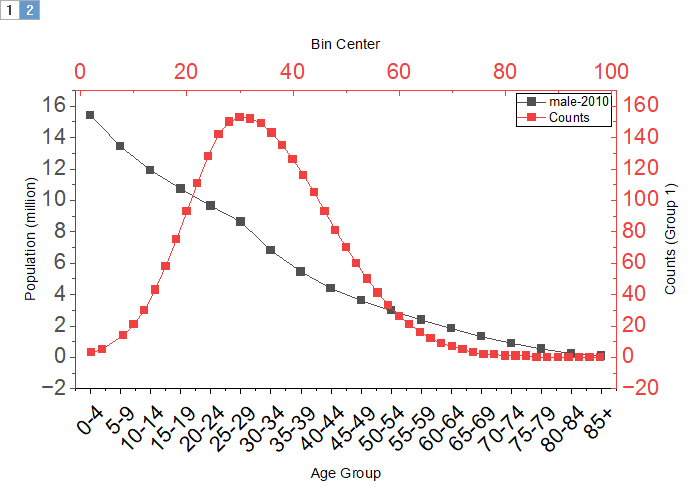

二重X軸 - 独立XYグラフ
DoubleX-IndependentXY

要求されるデータ
二重X軸グラフを作成するには、2組のX(Y)データ、または少なくとも4列のデータを選択します。2組目のX(Y)データは独立した軸を使用します。
グラフ作成
データを選択します。
メインメニューからを選びます。
テンプレート
dxindxy.otpu (Originのプログラムフォルダにインストールされています。)
ノート
ここのグラフは 2つのレイヤを持ち、それぞれが独立したXY軸を使用します。既定では、下側のX軸と左Y軸が第1レイヤを構成し、上側のX軸と右Y軸が第2レイヤを構成します。
- 選択したX列が2列以上ある場合、1組目のX(Y)は第1レイヤ、2組目は第2レイヤ、3組目は第1レイヤ…の順に割り当てます。
- 選択したX列が2列未満の場合、データ列を XYXY形式と見なし、1組目は第1レイヤ、2組目は第2レイヤ、3組目は第1レイヤ…の順に割り当てます。
- 選択列が 4列未満の場合、2組のX(Y)データ、または少なくとも4列を選択してください、というメッセージが表示されます。
- 選択列が4列以上で、かつX列が2未満の場合、列数が奇数なら、最後の列をY列として扱うことができます。